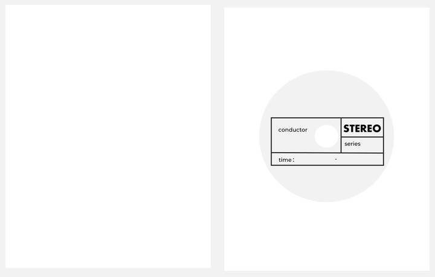
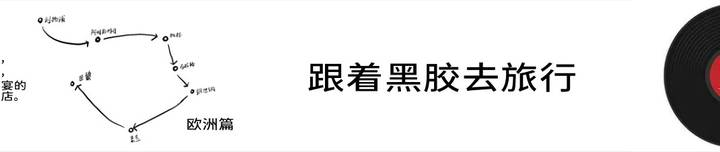

DESIGNED OBJECT
黑胶伴手本。
跟着黑胶去旅行
把一座城市的线条、一段音乐的记忆，放进可以随身携带的笔记本。从唱机的形状出发，让旅行、音乐与记录在纸面上相遇。
01 / 封面
从唱机到本子
用简洁图形重构黑胶唱机的形态，把唱片、唱臂与旋钮变成封面的视觉语言。深烘咖啡色方案中的 BEYOND THE NOTES，同时指向音符与笔记。

02 / 扉页
给使用者留一个位置
借用唱片内环的形式，把姓名、系列与使用时间放进扉页。它是作品的开头，也等待使用者补上自己的故事。

03 / CITIES & NOTES
七座城市，七段音乐记忆。
城市速写进入唱片的圆形结构，与音乐主题一起构成内页。翻过图像，空白的纸面等待新的记录。


04 / DETAILS
从封面延续到腰封。
把旅行路线、主题文字与唱片的视觉线索放在一起，成为一本完整的伴手本。

- 主题
- 音乐、城市旅行与随身记录
- 内容
- 封面、扉页、七城插画内页与腰封
- 呈现
- 深烘咖啡配色设计方案
一本本子，既装下旅行，也为下一段旅程留下空白。
交流设计合作